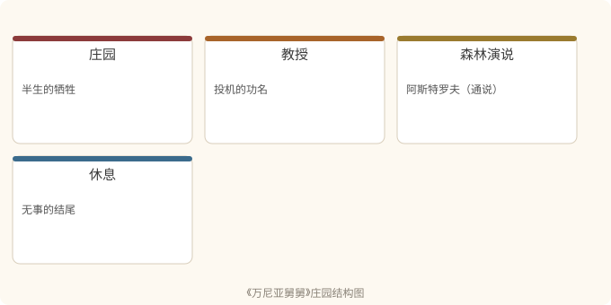

万尼亚舅舅
一、基本信息
| 作者 | 安东·契诃夫 |
|---|---|
| 成书/出版 | 1897年出版（作者页 B270 口径：Uncle Vanya (1897)） Anton Chekhov — Encyclopaedia Britannica（百科全书） |
| 国别/地区 | 俄国 |
| 时代 | 近代 · 19世纪末 |
| 体裁 | 四幕剧 |
| 语言 | 俄语 |

《万尼亚舅舅》庄园结构图（主题·结构图）
二、创作背景
作者页（B270）：契诃夫 major works 存目含'Uncle Vanya (1897)'（B270 作者页定位）。
题材（通说待核）：乡村庄园——万尼亚舅舅为教授'牺牲'半生后的觉醒与未遂的枪击。
三、内容脉络
教授到来：万尼亚的幻灭、叶列娜的美、阿斯特罗夫的森林演说（通说待核）。
四、主要人物表
| 人物 | 身份 | 说明 |
|---|---|---|
| 万尼亚舅舅 | 庄园管理者 | 被牺牲者（通说待核） |
| 阿斯特罗夫 | 医生 | 森林演说（通说待核） |
| 叶列娜 | 教授妻子 | （通说待核） |
五、主题与艺术特点
- '被牺牲的'人生（通说待核）。
- 森林：契诃夫的生态先声（通说待核）。
- 无事的结尾：'休息'（通说待核）。
六、影响与评论
- 作者页：契诃夫戏剧存目（B270 作者页口径）。
Anton Chekhov — Encyclopaedia Britannica（百科全书） - 作者页：'契诃夫之枪'与未说出之重（B270）。
Anton Chekhov — Encyclopaedia Britannica（百科全书）
七、阅读建议
难点
- 乡村庄园语境。
- '潜台词'表演。
- 《万尼亚舅舅》（人民文学出版社《契诃夫戏剧集》，通说待核）。
- 俄文原版（公有领域）。
契诃夫戏剧四部之二。
八、待核实
- 1897年出版、1899年首演说核对。
- 万尼亚/阿斯特罗夫/叶列娜人名核对。
- 森林演说原文待核。